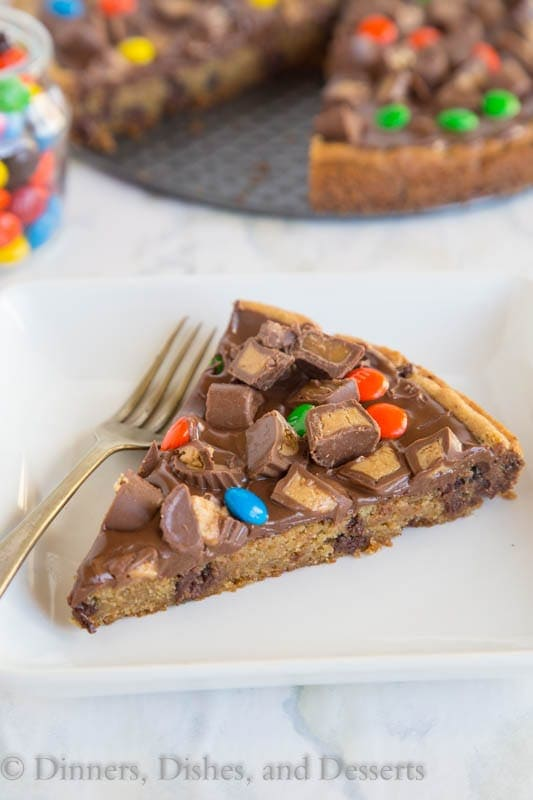

Candy Pizza

This candy bar cookie pizza will use up some of that candy for you. And trust me, it is way better than just eating the leftover Halloween candy by itself. A gooey chocolate chip cookie that is topped with a mixture of melted chocolate and peanut butter. Then you sprinkle on whatever your favorite candy is.
Ingrediants
- 1 batch chocolate chip cookie dough, (homemade or store bought)
- 3/4 cup semi-sweet chocolate chips
- 1/3 cup peanut butter
- 1 1/2 cups candy, , chopped (whatever you like)
Steps
- Preheat oven to 350 degrees
- Spread cookie dough in a 10 inch spring form pan (or a 9 inch baking dish)
- Bake for 10-15 minutes until edges are golden, and the center is set. Do not over bake, it will continue to cook after you remove it from the oven.
- Let cook for 10 minutes.
- In a microwave safe bowl melt chocolate chips and peanut butter together until smooth.
- Pour over cookie. Spread in an even layer.
- Immediately sprinkle chopped candy over the cookie.
- Let cool for at least 10 minutes before slicing. If will be very messy unless you let the chocolate set completely.